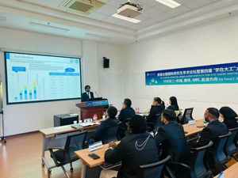
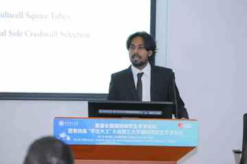
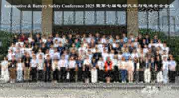
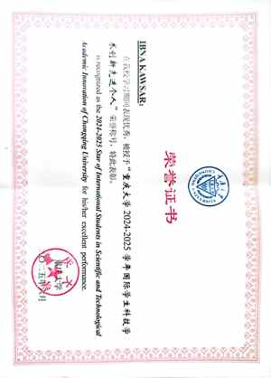
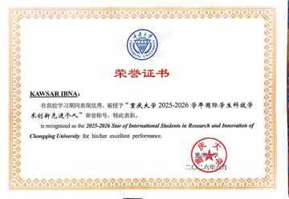

Designing safer structures for the electric-vehicle future.
Doctoral researcher at Chongqing University working on electric-vehicle battery safety, crashworthiness, computational mechanics, interpretable machine learning and structural optimization.

Mechanics, intelligence and safer mobility.
Research spanning crash, crush, vibration and mechanical shock in EV battery systems, integrating nonlinear finite-element analysis with data-driven design and multi-objective optimization.
Battery-Pack Crashworthiness
Side-impact protection, enclosure intrusion control and energy-absorbing crash-wall structures.
Computational Mechanics
Nonlinear FEA, contact, material failure and transient response using LS-DYNA, Abaqus, ANSYS and HyperMesh.
AI-Assisted Engineering
Surrogate models, deep neural networks, explainable ML and SHAP for structural-design interpretation.
Design Optimization
Multi-objective optimization across deformation, mass, energy absorption, robustness and safety.
Hierarchical optimization of multicell crash walls.
A systematic side-impact study using 15 multicell crash-wall architectures, three impact locations, three velocities and multiple wall gauges, followed by surrogate modeling, SHAP interpretation and direct FE verification.
Crash-wall architecture study
Nonlinear FE simulations are combined with interpretable machine learning and optimization to reduce battery-pack intrusion while balancing competing design objectives.
Methods
Nonlinear FE modeling · surrogate regression · SHAP interpretation · MCTS-assisted screening · four-objective metaheuristic optimization · direct FE verification.
Current manuscript
SHAP-Guided Hierarchical Optimization of Multicell Crash Walls for Electric-Vehicle Battery Pack Side-Impact Protection
Thin-Walled Structures · revised manuscript · 2026.
Peer-reviewed work.
Eight journal articles spanning EV battery mechanical safety, crashworthiness, structural design, vehicle dynamics and data-driven engineering.
Enhancing mechanical reliability and safety performance of a battery pack system for electric vehicles: A review
eTransportation 26, 100469 · DOI ↗
Enhancing crashworthiness performance of a battery pack system using multicell square tube structures
European Journal of Mechanics A/Solids 112, 105665 · DOI ↗
Effect of temperature on the modal parameters of continuous rigid frame bridge
Developments in the Built Environment 21, 100631 · DOI ↗
Combined recurrent neural networks and particle-swarm optimization for sideslip-angle estimation based on a vehicle multibody dynamics model
Multibody System Dynamics 64, 361–381 · DOI ↗
Trajectory optimization of an electric vehicle with minimum energy consumption using inverse dynamics model and servo constraints
Mechanism and Machine Theory 181, 105185 · DOI ↗
Deep-learning-based inverse structural design of a battery-pack system
Reliability Engineering & System Safety 238, 109464 · DOI ↗
Enhanced traffic safety and efficiency of an accelerated LC decision via DNN-APF technique
Measurement 217, 113029 · DOI ↗
Longitudinal predictive control for vehicle-following collision avoidance in autonomous driving considering distance and acceleration compensation
Sensors 22(19), 7395 · DOI ↗
Awards and academic distinction.
Selected recognition for research, innovation, academic performance and graduate scholarship.
Star of International Students in Research and Innovation
Chongqing University.
Star of International Students in Scientific and Technological Academic Innovation
Chongqing University.
Young Scientist Award (Structure Improvement)
Innovator Awards.
Second Prize
1st National International Graduate Academic Forum / 4th “Study at DUT” Academic Forum · Dalian University of Technology.
Outstanding International Student
Chongqing University.
Outstanding International Graduate
Chongqing University.
Chinese Government Scholarship
China Scholarship Council (CSC).
Finite Element Analysis instruction.
Supporting incoming master's students in core finite-element modeling concepts and structural-mechanics applications.
Graduate Teaching Assistant — Finite Element Analysis
Chongqing University · 2025–Present
Assisting Prof. Yongjun Pan in FEA instruction for incoming master's students, including modeling workflow, boundary conditions, meshing, solution interpretation and engineering applications.

Conferences, presentations and certificates.
Selected academic photos and award certificates displayed as individual website images.




Peer review and professional engagement.
Contribution to the research community through manuscript review and professional membership.
Discover Applied Sciences
Reviewer · 2025.
Journal of Traffic and Transportation Engineering (English Edition)
Reviewer · 2026.
Journal of Thermal Analysis and Calorimetry
Reviewer · 2026.
Chongqing Energy Research Society
Member · 2023–Present.
Research collaboration and academic exchange.
For discussions related to EV battery mechanical safety, crashworthiness, computational mechanics, structural optimization or doctoral research opportunities, please get in touch.